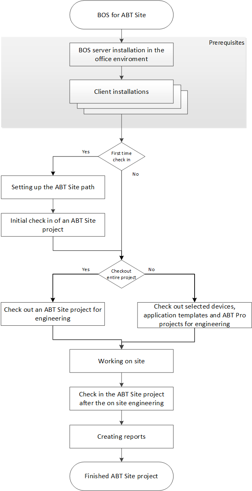

Introduction to Branch Office Server (BOS)
Use the Branch Office Server (BOS) for managing engineering in the office and engineering and commissioning on site. A BOS is a server for the following primary requirements:
- Central project storage
- Concurrent project work
- No data losses.
Project management achieves this as required by monitoring check-in and check-out for:
- Individual, entire projects.
- Selected project elements.
Check-Out/Check-In is possible any number of times. Multiple users can edit checked-out data simultaneously. During Check-In, the original file is synchronized with the checked-out file, so that, the new data from the checked-in file are added to the original file.

The Connect ABT to BOS implementation is completely independent of the existing XWP-BOS solution.
Workflow
